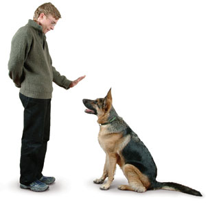

<div class="row">
    <div class="col-md-4">
        <div class="card box">
            <center>
                <h1 class="card-title" style="padding-top: 20px;font-size: 35px;">STAY</h1>
            </center>
            <center></center>
            <div class="card-body">

                <p class="Card-text" style="font-size: 20px;padding-left: 10px; "> How to train your dog to Stay ? <br>
                    <br>
                    A standing dog could bolt like a running vehicle, because there's
                    nothing keeping her in place.... A sitting dog is like a car in Park, but it's still easy
                    for her to boogey out of there.... But when she’s lying down, you’ve cut the engine....
                    Because the command helps you control your dog.
                    Holding still and remaining in one place is an extremely
                    useful skill for most dogs to do on command. Because dogs don’t generalize as easily as humans do,
                    for them to be successful, it is best to be very specific about your criteria for every verbal cue
                    so that your dog knows what you expect of them.
                    Stay means the dog should settle in and wait for me to come
                    back to her,” says Basedow. “At some levels of obedience trials, there are 'stay exercises' where
                    the dog needs to hold a position (usually sit or down) while the handler walks away. In day-to-day
                    life, I use ‘stay’ for situations where I want it clear to my dog that she is to wait for me to come
                    back. This might be while I grab the mail to keep her away from the road, or at meal times if they
                    are being a nuisance.
                    It is often beneficial to practice both 'stay' and 'wait'
                    within the same session, especially if your dog gets really excited about the release word. You
                    don’t want them to forget that 'stay' means you will come back to them.
                </p>
            </div>
        </div>
    </div>
</div>